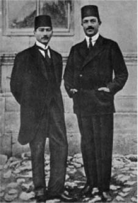

XLV
Büyük askeri başarısı, övgüler ve ordunun alkışları bile Mustafa Kemal’i İsmet ve Fevzi ile birkaç yakın dostu dışında, onu çevreleyen kumandanların, politikacıların ve eski düşmanlarının onu bir türlü kendi üstleri olarak benimsemeyişleri gerçeğine kör etmemişti. Pek çoğu ona karşı kişisel bir nefret duyuyordu. Yabancı düşman yenildikten sonra artık hiçbirinin egemen konumunun sürmesine izin vermeyecekti. İktidar için mücadele etmesi gerekiyordu, onlar da kuşkusuz karşı koyacaklardı. Meclis onu yaklaşan Barışş Konferansı’na ilişkin durumu ve düzenlemeleri tartışmak üzere iki kez Ankara’ya çağırmıştı. Onu gözlerinin önünde bulundurmak istediklerinin farkındaydı. Onu, askeri tehlikeyi savuşturmak için geçici olarak diktatör yapmışlardı. Muzaffer kumandanın sürekli diktatöre dönüşmesine izin vermemekte kararlıydılar.
Onlara karşı hazırlıklıydı. Bir akşam her zamanki sakin tavrı içinde Halide Edip ona dedi ki: “Barıştan sonra dinleneceksiniz Paşam; çok zor bir mücadeleden çıktınız.”
“Dinlenmek mi, ne dinlenmesi?” dedi Mustafa Kemal yırtıcı bir tavırla. “Yunanlılardan sonra birbirimizle dövüşeceğiz; birbirimizi yiyeceğiz.”
“Bu, gerçekten gerekiyor mu?”
“Muhaliflerime ne buyrulur?” diye bağırdı Mustafa Kemal. Gözlerini kızgın olduğu zamanlardaki gibi kısmış, bakışlarına meşum bir parıltı yerleşmişti. “Onları halka linç ettireceğim. Hayır! Dinlenmeyeceğiz, birbirimizi öldüreceğiz” diye sözüne devam etti, sesi hafiflemişti, “Dahası, bu mücadele sona erdiği zaman, her şey çok sıkıcı olacak. Yeni bir heyecan bulmamız gerekecek.”
Ankara’ya hemen dönmesinin imkânsız olduğu haberini gönderdi; askeri görevleri onun İzmir’de bulunmasını gerektiriyordu.
Başvekil Rauf ile bir dizi politikacı onun peşinden gitti. Onun görüşlerini öğrenmek niyetindeydiler. Yeni Türkiye’de hükümet ne olmalıydı? Ankara’da iktidar sahibi geçici bir hükümet vardı. İstanbul’daysa, sadrazamları ve nazırlarıyla Halife-Sultan; ama bu hükümetin sadece ismi kalmıştı. Çoğunluk Padişahın anayasal bir hükümdar olarak Mustafa Kemal’in de ilk sadrazam olarak birbirine kaynaştırılması görüşünden yanaydı. Bu konuda Mustafa Kemal’in görüşleri neydi acaba?
Fakat o, düşüncesini bir sır olarak kendisine sakladı. Anayasal Padişah’ın sadrazamı olmak gibi bir niyeti yoktu. Kendi görüşleri son derece kesin ve devrimci nitelikteydi. Yabancı düşmanlar gider gitmez, Saltanat, Hilafet, Osmanlı İmparatorluğu’nun bütün fazlalıkları gibi, onların peşinden gitmeliydiler. Bütün o eski yararsız debdebesiyle modası geçmiş saçmalıklarıyla tarihin derinliklerine gömülmeliydiler. O, cumhuriyeti ilan edecek ve bu değişiklik kılıfı altında kendisi tam yetkili yönetici olacaktı. Bundan sonra da Türkiye’yi bütün ayrıntılarıyla yeniden biçimlendirecekti. Fakat şimdilik ihtiyatla hareket etmek ve niyetlerini gizlemek zorundaydı. Muhalefetin gücünden henüz emin değildi. Türklerin hepsi tutucu ve dindardı. Ordu ona bağlıydı gerçi, ama Padişah ya da Halife’ye hücum etmesi halinde, askerler bile ona karşı direnebilirdi. Ordusuz, o bir hiçti.
Rauf kuşkuluydu. Sorularında ısrar ediyor, Barış Konferansı’nın ayrıntılarında konunun saptırılmasına engel oluyordu. Mustafa Kemal zaman kazanmak için, onunla Ankara’da görüşmeyi ve düşüncelerini ona orada aktarmayı kabul etti.
Ankara’da bir içki sofrasının çevresinde bir araya geldiler. Refet eskisi kadar konuşkandı, her zamanki gibi diliyle olduğu kadar kafası ve elleriyle de devamlı gevezelik ediyordu. Moskova’daki bir diplomatik görevden henüz dönmüş olan Ali Fuat ve Rauf da oradaydılar. 1919’da Amasya’daki ilk toplantıda Mustafa Kemal’le birlikte olan aynı kişilerdi. O zaman kendilerinden destek istemişti. Her üçü de önemli şeyler yapmış olan önemli adamlardı.
Karşılarında gücünün ve prestijinin fazlasıyla farkında, başarısından emin, iradesini zayıflatacak pişmanlık ya da herhangi başka duyguya, kararlarını karmaşıklaştıracak hiçbir bağlantıya yer vermediği için sert ve güçlü olarak, meşum ve kurşuni bakışlarıyla Mustafa Kemal oturmuştu. Kendi muhakemesine, yeteneğine ve talihine duyduğu olağanüstü inancı da çok güçlüydü. Hiçbir tereddüdü yoktu: Planlarını gizlemek için onlara kaçamak cevaplar verecekti. Fakat hiçbir kuşkuya kapılmadan ve acımasızca, ne kadar uzun süre beklemesi, hangi silahı kullanması gerekirse gereksin ve bedeli ne olursa olsun, istediğini elde etmekte son derece kararlıydı. Mustafa Kemal artık Amasya’da desteklerini rica eden kişiden çok farklı biriydi.
Rauf ve Refet, Mustafa Kemal’in düşüncelerinden haberdardılar. Onun tüm bu devrimci görüşlerini işitmişlerdi. Ne ki, geçmişte bütün bunlar köşeye sıkışmış bir halde savaşan bir adamın teorileri iken, artık Mustafa Kemal bunları gerçeğe dönüştürebilecek kudrete sahip durumdaydı. Bunu yapacak mıydı? Yoksa çoğu zaman görüldüğü gibi, ateşli devrimci iktidara geldiği zaman, temkinli bir yöneticiye mi dönüşecekti?
Bunu öğrenmeliydiler; bütün gelecek buna bağlıydı. Rauf hiç zaman kaybetmedi, hiçbir kurnazlığa başvurmaksızın doğrudan doğruya konuya girdi.
“Bazıları sizin saltanat ve hilafeti ilga etmeye niyetlendiğinizi söylüyorlar. Bu doğru mu Paşam?” diye sordu.
Mustafa Kemal ihtiyatla, “Öncelikle bu konuda sizin görüşlerinizi öğrenmek isterdim” dedi.
Her ikisi de sağlam karakterli, her ikisi de tutkularınca yönlendirilen bu iki kişi arasında, ortak düşmanları olan Yunanlıların gidişiyle, kaçınılmaz olan rekabet artık başlamıştı. Hiçbir şeye bağlı olmayan devrimciye karşı tutucunun; sözde diktatöre karşı anayasal hükümet yanlısının, her şeyi kökünden söküp atmak ve yok etmekte kararlı kişiye karşı, geleneğe ve istikrarlı gelişme yanlısı arasındaki çekişmeydi bu.

Mustafa Kemal Rauf Orbay ile birlikte.
“Babam ve ben” dedi Rauf, “Padişah’ın ekmeğini yedik. Şu anda Padişah tahtında oturan vatan haininden, Vahdettin’den söz etmiyorum elbette. O gitmelidir ve yerini yeni Padişah almalıdır. Fakat benim gibi her gerçek Türk, Halife Padişah’a bağlıdır. Biz, hükümdara arka çıkmalıyız. Bundan başka, devlet içinde hiçbir uyruğun göz dikemeyeceği kadar yüksek ve ulu bir makamın bulunması da zorunludur. O dakikada, bütün Türk halkının duygularını ifade ediyordu. Refet bu görüşe katıldı. Ali Fuat, Moskova’dan henüz döndüğü ve durumu yeterince bilmediği mazeretini beyan ederek çekimser kaldı. Mustafa Kemal kaçamak cevap verdi. Eylem zamanının henüz gelmediğini anlamıştı. Beklemesi gerekiyordu.
“Bunu tartışmak için bir neden göremiyorum” dedi; Rauf belirgin bir cevap için baskı yapınca da: “İleri sürdüğünüze benzer bir niyetim yok. Esasen yarın Meclis’te bu konuya ilişkin bir açıklama yapacağım.”
Diğer üçü tatmin olmuş bir halde konuyu kapattılar ve şafak sökünceye dek keyifle içki içtiler. Ertesi gün Mustafa Kemal söz verdiği gibi, Meclis’te konuşma yaptı.
Mustafa Kemal, işleri biraz ağırdan alması gerektiğini fark etmişti. Muhalefet, beklediğinden de güçlüydü. Ya fırsatı yakalamak için beklemeli ya da bu fırsatı kendisi yaratmalıydı. Bunun için beklerken, olaylar, tam da onun istediği doğrultuda gelişti.
Refet’in evindeki toplantıdan bir hafta sonra İngilizler, Padişah’ı barış şartlarını tartışmak üzere Lozan’a bir heyet göndermeye ve aynı çağrıyı Ankara’daki Meclis’e de iletmeye çağırdılar. Bu, çok düşüncesizce yapılmış bir hataydı.
Sonuçta büyük bir infial yarattı. Birkaç kişisel yandaşı dışında, artık her gerçek Türk Vahdettin’den nefret ediyordu. O, Türkiye’yi mahvetmek isteyen İngilizler ve Yunanlıların yanında yer almış olan bir vatan hainiydi. Vahidendin ve Lloyd George, işte gerçek ulusal düşmanları bu iki kişiydi. Ve bir vatan haini olması dolayısıyla, Vahidettin’e olan nefretleri iki kat şiddetliydi.
Çağrı gelir gelmez büyük bir öfke çığlığı yükseldi. İstanbul’da Padişah’ın adamları dövüldü. Padişah’ı desteklemiş olan gazeteci Ali Kemal, müttefik polis gücünün gözleri önünde güpegündüz kentin belli başlı kulüplerinin birinden sürüklenerek çıkarıldı, İzmit’e götürüldü ve taşlanarak öldürüldü. Padişah’ın hizmetlileri, nazırları, hatta sadrazamı sokağa adım atmaktan çekinir oldular.
Ankara’da Meclis toplanmış, mebuslar pürhiddet bakışıyorlardı. Bu İstanbul hükümeti de neydi? Türkiye’yi kurtarmak için ne yapmıştı? O modası geçmiş yaşlı budala, Sadrazam Tevfik Paşa, çağrıyı imzalama hakkını nereden almıştı? O ve tüm kabinesi köpeklerden, düşmüş insanlardan, vatan hainlerinden ve İstanbul’daki dalkavuk padişahın çanak yalayıcılarından oluşuyordu. Türkiye’de yalnızca bir tek hükümet vardı, o da kendilerinin Büyük Millet Meclisi hükümetiydi.
Mustafa Kemal, zamanın geldiğini, hemen harekete geçmesi gerektiğini, aksi takdirde hiçbir zaman başaramayacağını anladı. Mebusları Vahdettin’i yurtdışına sürmeye, hatta belki Saltanat’ı kaldırmaya ikna edebileceğini gördü. Hilafete saldırma riskini göze almayacaktı: Bu en yoksul köylüye varıncaya değin tüm halkın dinsel duygularını incitebilirdi ve bu konuda destek bulacağını da hiçbir şekilde sanmıyordu.
Bütün mebusların öfkeli çığlıklar atarak tartıştıkları bir sırada, Meclis’teki hengâmenin ortasında Mustafa Kemal içeri girdi ve Meclis’ten kendisini dinlemesini istedi; Saltanat’la Hilafet’in birbirinden ayrılmasını ve saltanatın ilga edilerek Vahdettin’in yurtdışına sürülmesini teklif etti.
Bütün öfkesine rağmen, Meclis son derece hayati bir karara doğru sürüklendiğini anladı. Mebusların heyecanı bir anda söndü, teklifi tartışmaya başladılar.
Mustafa Kemal, elindeki kartlarının bir kısmını göstermişti. Henüz başarısızlığı kaldırabilecek kadar güçlü değildi. Kişisel taraftarlarından seksen kişinin de desteğiyle, derhal bir oylama yapılmasında ısrar etti. Meclis, teklifi Özel Adalet Komisyonu’na havale etti.
Özel komisyon ertesi gün toplandı. Hukukçularla din adamlarından oluşmuştu. Saatlerce tekdüze bir havada, Saltanat’ın Hilafet’ten ayrılması konusunu tartıştılar. Başkan, uçuşan cübbesi ve uzun sakallarıyla, mağrur bir din adamıydı. Sakallı hocayı bir diğer sakallı hoca, uzun ve can sıkıcı konuşmalarıyla bir hukukçuyu diğeri izliyordu. Eski belgelerden, Kur’an ve Şeraitin çok derin tefsirlerini yapıyorlardı. Bağdat ve Kahire halifelerinin geçmişe gömülmüş tarihlerinden yüzlerce örnek gösterdiler. Arapça kelimelerin anlamlarındaki her bir nüansı tartışarak uzayıp giden saatler boyunca bu minvalde konuştular, konuştular. Her nokta üzerinde kılı kırk yararcasına durup yalın cümleleri karmaşık savlarla dağıttılar ve tartışmanın iyice tadını kaçırdılar.
Kurşuni üniforması içindeki Mustafa Kemal, bir köşede, sinirleri bozulmuş fakat ses çıkarmadan onları seyrediyor, atılmak üzere olan yabanıl bir bozkurt gibi gergin oturuyordu.
Komisyon teklifin karşısındaydı. Bir üyesi bile teklifin lehine konuşmamıştı. Kaybedecekti.
Ne ki, daha ilk rauntta kaybetmeyi göze alamazdı. Önemsiz şeyler hakkında yapılan bu amaçsız, sonu gelmez tartışma onu kızdırmıştı. Sinirleri iyice bozulmaya başladı. Bu malumatfuruş budalalar sürüsü, ölü bir kurumun yozlaşmış yapısını destekleyecek materyal bulmak için kelimelerle oynarken, Gazi, egemen olarak kendisi bütün gün oturup bekleyecek miydi?
Ansızın bütün kontrolünü kaybetti. Öfkeden titreyerek, homurdanarak bir masanın üzerine sıçradı ve toplantıyı durdurdu.”Efendiler, Osmanlı Sultanı egemenliği halktan zorla almıştır,” dedi “ve halk şimdi zorla onu geriye alıyor. Saltanat Hilafet’ten ayrılmalı ve kaldırılmalıdır. Bu görüşe katılır ya da katılmazsınız, bu sizin bileceğiniz iş. Ama ne olursa olsun bu gerçekleşecektir, bu arada bazılarının kafaları kesilse dahi.”
Diktatör emirlerini vermişti. Saygıdeğer başkan ayağa kalktı ve konuştu: “Efendiler,” dedi, “Gazi bize meseleyi bizim ele aldığımızdan çok farklı bir bakış açısından izah etti.”
Mebuslar tehlikeden kurtulmak için aceleden birbirlerini ite kaka Meclis’e bu önerinin yasalaştırılmasını tavsiye etmeye koştular; Saltanat kesinlikle Hilafet’ten ayrılmalıydı; Saltanat’ın kesinlikle ilga edilmesi ve Vahdettin’in ülkeden çıkarılması şarttı. Uzun giysilerinin eteklerini kavuşturarak, bu zincirsiz bozkurt üzerlerine atlamadan önce savuşabilmek için kaçıştılar.
Meclis, tasarıyı görüşmek için hemen oturuma geçti. Tartışmaya başladılar. Mustafa Kemal, Meclis’in genel havasının kendisine karşı olduğunu anlamıştı. Bir an evvel oylamaya geçilmesini sağlamalıydı. Her ne pahasına olursa olsun kazanması şarttı. Kişisel taraftarlarını toplantı salonunun bir tarafına topladı ve derhal açık oylamaya geçilmesini istedi. Kimi mebuslar tasarının ad okunarak oylanmasını talep etti. Mustafa Kemal buna karşı çıktı. Taraftarları silahlıydı; içlerinden bazıları her şeyi yapabilecek karakterdeydi; emir alırlarsa silahlarını hiç duraksamadan kullanacakları kesindi.
“Meclis’in oybirliğiyle kabul edeceğinden eminim” dedi. Sesinden bir tür tehdit seziliyordu ve taraftarları da ellerini bellerine atmışlardı. “Ellerin kaldırılması yeterlidir.”
Başkan bir gözü Mustafa Kemal’de, tasarıyı oylamaya koydu. Birkaç el yükseldi.
“Oybirliğiyle kabul edildi” dedi Başkan.
Bir düzine kadar mebus protesto etmek için sıraların üstüne fırladılar. “Bu doğru değil, ben karşıyım!” Diğerleriyse, “Otur yerine! Kes sesini! Domuz!” diye bağırıp ıslık çaldılar, birbirlerine sövüp saydılar.
Tam bir velvele çıkmıştı. Mustafa Kemal’den gelen işaret üzerine, Başkan bütün bu gürültüyü bastırmak için bağırarak kararını tekrar etti.
“Türkiye Büyük Millet Meclisi’nin oybirliğiyle aldığı karar sonucu, Saltanat ilga edilmiştir”1 diyerek oturumu kapattı. Mustafa Kemal, taraftarlarıyla çevrilmiş olarak Meclis’ten ayrıldı.
Bunun arkası çabucak geldi. Beş gün sonra Refet, Harrington’ın burnunun dibinde yapılan bir darbe ile İstanbul’un denetimini ele geçirdi ve Padişah hükümetini feshetti.
Padişah birkaç gün dayandı. Sonra Harrington’a bir haberci gönderdi. Bu adam, Vahdettin’in maiyetinden hâlâ güven duyduğu tek kişi olan Saray orkestrasının şefiydi.
Şef, yaşlı ve sarsak biriydi, İngiliz ordusu karargâhına büyük bir gizlilik içinde gelmişti. Vahdettin herhangi bir yazılı belge vermeyi reddettiği için, elinde hiçbir şey yoktu ve Başkumandan’dan başka hiç kimseyle görüşmeyeceğini söylüyordu.
Sonunda Harrington onu kabul etti. Korkudan titreyen ve kekeleyen yaşlı şef, getirdiği mesajı güç bela aktarabildi: Zat-ı Şahane, Padişah hazretleri iyi kalpli İngiliz generalinin ve İngiliz hükümetinin korumasını büyük bir arzuyla istirham etmekteydi: Zat-ı Şahaneleri, yaşamının tehlikede olduğundan emindi: Zat-ı Şahaneleri mümkün olduğu kadar çabuk kaçmaya karar vermişti.
İki gün sonra İngilizlere ait bir ambulans, sarayın arka kapılarından birinin önünde durdu. Yanında oğlu, bir bavul ve bir çanta taşıyan bir harem ağası olduğu halde, Vahdettin dışarıya çıktı.
O sabah hava oldukça kapalıydı ve hafif yağmur çiseliyordu.
Bir İngiliz emir subayı ambulansın arkasındaki ahşap merdiveni indirdi. Bir elinde sıkıca kavradığı şemsiyesiyle, Osmanlı İmparatorluğu’nun sonuncu Padişahı, tüm Türklerin hükümdarı, ‘Grand Seigneur’ (Büyük Efendi), ‘Dünyanın Dehşeti’ olan adam, ahşap merdivenleri tırmanmaya çalıştı. Şemsiye kapıya takılmış, içeri girmemekte direniyordu. İhtiyar adam zayıfça şemsiyeyle mücadeleye girişmişti, gittikçe hırçınlaşıyor ve huzursuzlanıyordu: Islanacağı için şemsiyeyi kapamak ve onu bırakmak istemiyordu. Bir İngiliz subayı şemsiyeyi elinden çekip aldı ve yaşlı adamı merdivenlerden çıkarıp kapıyı üstüne kapattı. Ambulans hareket etti.
İskelelerden birinden bir motor son hızla yola çıktı. Bir İngiliz savaş gemisinde, İngiliz Filosu Başkumandanı olan Amiral, Padişah’ı hükümdarlara yaraşır bir törenle karşıladı.2
Ansızın bir feryat işitildi: Vahdettin telaşla güverteye dönmüştü; kendisine bir genç kızınki gibi tiz sesiyle çığlıklar atarak bir şeyler söyleyen harem ağasına küfrediyordu; harem ağasının taşıdığı valiz ortadan kaybolmuştu; neredeydi?
Sonunda valiz motorda bulundu. Vahdettin içini kontrol etti. Her şey yerli yerindeydi; rahat bir nefes alarak kamarasına döndü; valizde muhteşem altın kahve takımlarıyla toplama fırsatı bulabildiği mücevherleri bulunuyordu.
Bir saat sonra Vahdettin bir İngiliz savaş gemisinin içinde, iradesiz, gevşek ve dehşete kapılmış yaşlı bir adamın sonuna ulaşmak üzere, Türkiye’den uzaklaşmış bulunuyordu.
Yeğeni Abdülmecit, onun yerine bütün Müminlerin Halifesi oldu, ne var ki elinde hiçbir dünyevi güç ya da makam bırakılmamıştı.